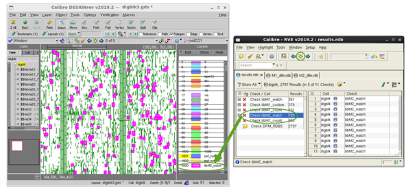

Calibre RVE is
a graphical debug program that interfaces with most IC layout tools.
You can use Calibre RVE to view your pattern matching results.
Procedure
- Open your layout in a viewer
that is supported by Calibre RVE.
- Open Calibre RVE for DRC:
This displays the Calibre RVE dialog box.
- Do the following to open the
pattern matching results:
- Enter
the results database (RDB) filename in the Database field.
- Select
a Database Type of “DRC/ERC”.
- Click Open.
A tree view of the results is displayed on the left,
with individual results listed on the right.
- (Optional) If the pattern
matching run produced DFM RDB files in addition to the main DRC
results database, click the Open Side RDBs button
() or choose .
The properties attached to each result are included
in the DFM RDB. To view the properties, make sure the Result View
on the right is set to Details view ()
- To highlight
results, select a check in the tree view on the left or a result
in the result view on the right, then type H on the keyboard or
click the Highlight button () in
the toolbar.
Depending on your run,
you may want to set one of these options in Calibre RVE.
—
Highlights results in the cell in which they are reported, rather
than in the top cell. Only available if the DRC CELL NAME YES CELL
SPACE XFORM ALL statement is in the rule file.
Display lower-level cell highlights in top cell —
In Calibre RVE, choose and
choose the Highlighting category.
Only available when highlighting to Calibre DESIGNrev. When used,
the view depth in Calibre DESIGNrev must be set to at least one
to view the highlights at the top level.
Results
The following figure highlights match locations from the rule
check libM2_match.
Figure 1. Pattern
Matching Results in Calibre RVE